Maria Teleki
mariateleki@tamu.edu
Howdy! I’m a PhD student in Computer Science at Texas A&M University, advised by James Caverlee, working across speech AI, computational social science, and AI governance.
I study the social dimensions of AI to build systems that are robust and accountable to the people they serve. I develop benchmarks and empirical frameworks that reveal how disfluency, social signals, and contextual cues shape AI system performance — and how institutions govern their use. My work focuses on three areas:
→ Robust Conversational AI Systems (ICASSP 26, INTERSPEECH 25)
→ Social Signals in Human-AI Interaction (ICWSM 25, EMNLP Findings 25)
→ Governance of AI Systems (Preprint 26)
This work has been recognized through the Avilés–Johnson Fellowship in Computer Science and Engineering and through invited talks and public media, including the MASKulinity Podcast. I will join Google DeepMind as a Student Researcher this Summer!
Robust Conversational AI Systems
Real human speech is full of disfluency — pauses, repairs, and restarts — that current systems often treat as noise. I develop benchmarks and evaluation frameworks that model these patterns as structured signal, revealing robustness failures in conversational AI systems operating on real speech.

|
Z-Scores: A Metric for Linguistically Assessing Disfluency Removal Maria Teleki, Sai Janjur, Haoran Liu, Oliver Grabner, Ketan Verma, Thomas Docog, Xiangjue Dong, Lingfeng Shi, Cong Wang, Stephanie Birkelbach, Jason Kim, Yin Zhang, James Caverlee ICASSP 2026
Evaluating disfluency removal in speech requires more than aggregate token-level scores. Traditional word-based metrics such as precision, recall, and F1 (E-Scores) capture overall performance but cannot reveal why models succeed or fail. We introduce Z-Scores, a span-level linguistically-grounded evaluation metric that categorizes system behavior across distinct disfluency types (EDITED, INTJ, PRN). Our deterministic alignment module enables robust mapping between generated text and disfluent transcripts, allowing Z-Scores to expose systematic weaknesses that word-level metrics obscure. By providing category-specific diagnostics, Z-Scores enable researchers to identify model failure modes and design targeted interventions -- such as tailored prompts or data augmentation -- yielding measurable performance improvements. A case study with LLMs shows that Z-scores uncover challenges with INTJ and PRN disfluencies hidden in aggregate F1, directly informing model refinement strategies.
@inproceedings{teleki25_zscores,
|
|
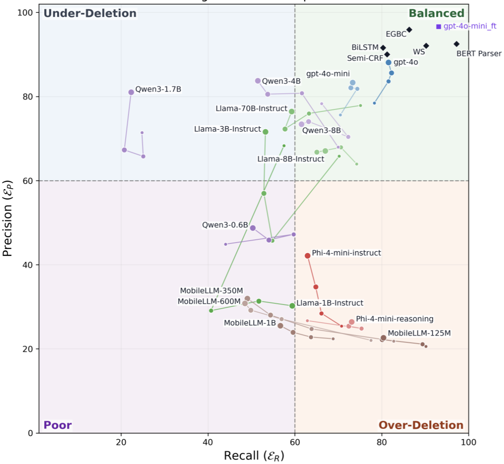 |
Conversational Speech Reveals Structural Robustness Failures in SpeechLLM Backbones Maria Teleki, Sai Janjur, Haoran Liu, Oliver Grabner, Ketan Verma, Thomas Docog, Xiangjue Dong, Lingfeng Shi, Cong Wang, Stephanie Birkelbach, Jason Kim, Yin Zhang, Éva Székely, James Caverlee Collaboration w/ KTH Royal Institute of Technology Preprint 2026
LLMs serve as the backbone in SpeechLLMs, yet their behavior on spontaneous conversational input remains poorly understood. Conversational speech contains pervasive disfluencies -- interjections, edits, and parentheticals -- that are rare in the written corpora used for pre-training. Because gold disfluency removal is a deletion-only task, it serves as a controlled probe to determine whether a model performs faithful structural repair or biased reinterpretation. Using the DRES evaluation framework, we evaluate proprietary and open-source LLMs across architectures and scales. We show that model performance clusters into stable precision-recall regimes reflecting distinct ``editing policies.'' Notably, reasoning models systematically over-delete fluent content, revealing a bias toward semantic abstraction over structural fidelity. While fine-tuning achieves SOTA results, it harms generalization. Our findings demonstrate that robustness to speech is shaped by specific training objectives.
@inproceedings{teleki26_dres,
|
|
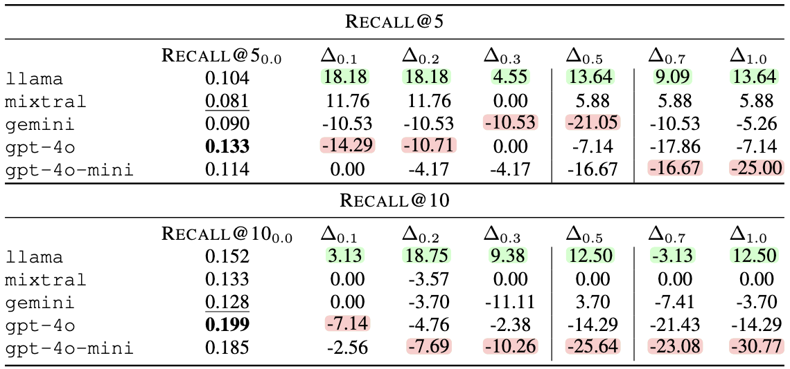 |
I want a horror -- comedy -- movie: Slips-of-the-Tongue Impact Conversational Recommender System Performance Maria Teleki, Lingfeng Shi, Chengkai Liu, and James Caverlee INTERSPEECH 2025
Disfluencies are a characteristic of speech. We focus on the impact of a specific class of disfluency -- whole-word speech substitution errors (WSSE) -- on LLM-based conversational recommender system performance. We develop Syn-WSSE, a psycholinguistically-grounded framework for synthetically creating genre-based WSSE at varying ratios to study their impact on conversational recommender system performance. We find that LLMs are impacted differently: llama and mixtral have improved performance in the presence of these errors, while gemini, gpt-4o, and gpt-4o-mini have deteriorated performance. We hypothesize that this difference in model resiliency is due to differences in the pre- and post-training methods and data, and that the increased performance is due to the introduced genre diversity. Our findings indicate the importance of a careful choice of LLM for these systems, and more broadly, that disfluencies must be carefully designed for as they can have unforeseen impacts.
@inproceedings{teleki25_horror,
|
|
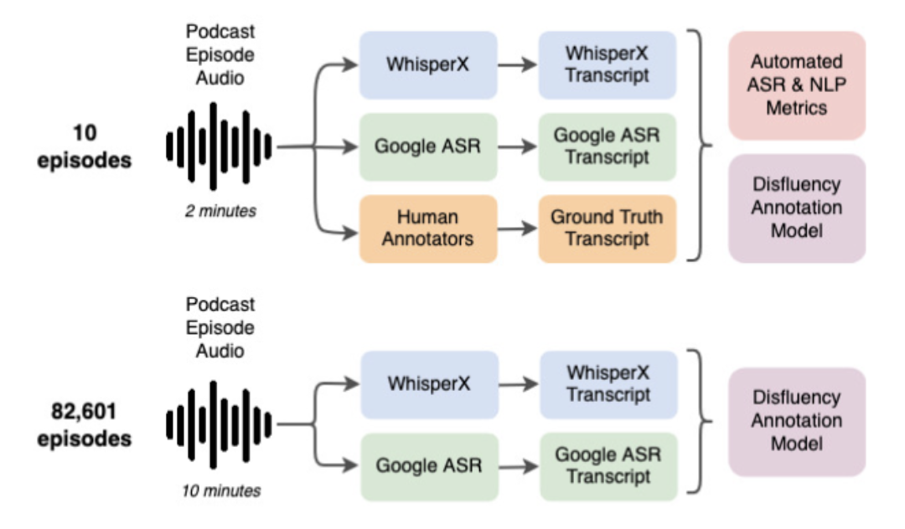 |
Comparing ASR Systems in the Context of Speech Disfluencies Maria Teleki, Xiangjue Dong, Soohwan Kim, and James Caverlee INTERSPEECH 2024
In this work, we evaluate the disfluency capabilities of two automatic speech recognition systems -- Google ASR and WhisperX -- through a study of 10 human-annotated podcast episodes and a larger set of 82,601 podcast episodes. We employ a state-of-the-art disfluency annotation model to perform a fine-grained analysis of the disfluencies in both the scripted and non-scripted podcasts. We find, on the set of 10 podcasts, that while WhisperX overall tends to perform better, Google ASR outperforms in WIL and BLEU scores for non-scripted podcasts. We also find that Google ASR's transcripts tend to contain closer to the ground truth number of edited-type disfluent nodes, while WhisperX's transcripts are closer for interjection-type disfluent nodes. This same pattern is present in the larger set. Our findings have implications for the choice of an ASR model when building a larger system, as the choice should be made depending on the distribution of disfluent nodes present in the data.
@inproceedings{teleki24_interspeech,
|
|
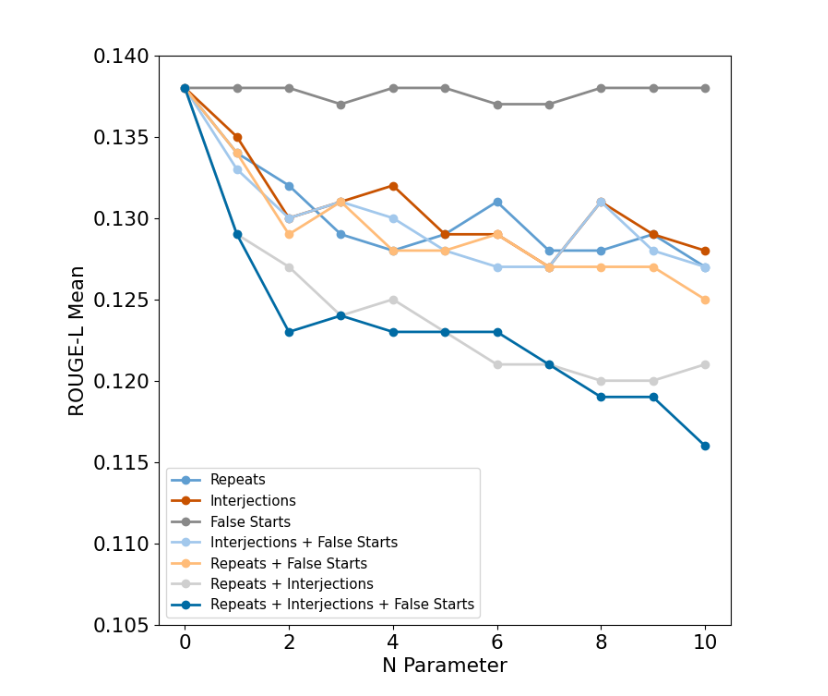 |
Quantifying the Impact of Disfluency on Spoken Content Summarization Maria Teleki, Xiangjue Dong, and James Caverlee LREC-COLING 2024
Spoken content is abundant -- including podcasts, meeting transcripts, and TikTok-like short videos. And yet, many important tasks like summarization are often designed for written content rather than the looser, noiser, and more disfluent style of spoken content. Hence, we aim in this paper to quantify the impact of disfluency on spoken content summarization. Do disfluencies negatively impact the quality of summaries generated by existing approaches? And if so, to what degree? Coupled with these goals, we also investigate two methods towards improving summarization in the presence of such disfluencies. We find that summarization quality does degrade with an increase in these disfluencies and that a combination of multiple disfluency types leads to even greater degradation. Further, our experimental results show that naively removing disfluencies and augmenting with special tags can worsen the summarization when used for testing, but that removing disfluencies for fine-tuning yields the best results. We make the code available at https://github.com/mariateleki/Quantifying-Impact-Disfluency.
@inproceedings{teleki-etal-2024-quantifying-impact,
|
|
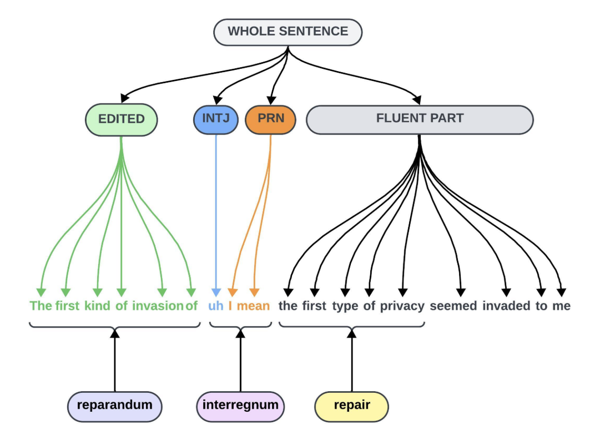 |
DACL: Disfluency Augmented Curriculum Learning for Fluent Text Generation Rohan Chaudhury, Maria Teleki, Xiangjue Dong, and James Caverlee LREC-COLING 2024
Voice-driven software systems are in abundance. However, language models that power these systems are traditionally trained on fluent, written text corpora. Hence there can be a misalignment between the inherent disfluency of transcribed spoken content and the fluency of the written training data. Furthermore, gold-standard disfluency annotations of various complexities for incremental training can be expensive to collect. So, we propose in this paper a Disfluency Augmented Curriculum Learning (DACL) approach to tackle the complex structure of disfluent sentences and generate fluent texts from them, by using Curriculum Learning (CL) coupled with our synthetically augmented disfluent texts of various levels. DACL harnesses the tiered structure of our generated synthetic disfluent data using CL, by training the model on basic samples (i.e. more fluent) first before training it on more complex samples (i.e. more disfluent). In contrast to the random data exposure paradigm, DACL focuses on a simple-to-complex learning process. We comprehensively evaluate DACL on Switchboard Penn Treebank-3 and compare it to the state-of-the-art disfluency removal models. Our model surpasses existing techniques in word-based precision (by up to 1%) and has shown favorable recall and F1 scores.
@inproceedings{chaudhury-etal-2024-dacl-disfluency,
|
|
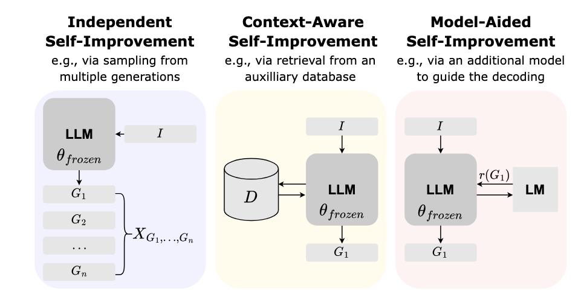 |
A Survey on LLM Inference-Time Self-Improvement Xiangjue Dong,* Maria Teleki,* and James Caverlee Preprint 2024
Techniques that enhance inference through increased computation at test-time have recently gained attention. In this survey, we investigate the current state of LLM Inference-Time Self-Improvement from three different perspectives: Independent Self-improvement, focusing on enhancements via decoding or sampling methods; Context-Aware Self-Improvement, leveraging additional context or datastore; and Model-Aided Self-Improvement, achieving improvement through model collaboration. We provide a comprehensive review of recent relevant studies, contribute an in-depth taxonomy, and discuss challenges and limitations, offering insights for future research.
@inproceedings{dong24_survey,
|
|
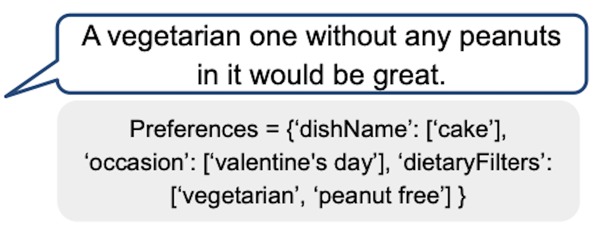 |
SYSTEMHowdy Y’all: An Alexa TaskBot Majid Alfifi, Xiangjue Dong, Timo Feldman, Allen Lin, Karthic Madanagopal, Aditya Pethe, Maria Teleki, Zhuoer Wang, Ziwei Zhu, James Caverlee Alexa Prize TaskBot Challenge Proceedings 2022
In this paper, we present Howdy Y’all, a multi-modal task-oriented dialogue agent developed for the 2021-2022 Alexa Prize TaskBot competition. Our design principles guiding Howdy Y’all aim for high user satisfaction through friendly and trustworthy encounters, minimization of negative conversation edge cases, and wide coverage over many tasks. Hence, Howdy Y’all is built upon a rapid prototyping platform to enable fast experimentation and powered by four key innovations to enable this vision: (i) First, it combines a rules, phonetic matching, and a transformer-based approach for robust intent understanding. (ii) Second, to accurately elicit user preferences and guide users to the right task, Howdy Y’all is powered by a contrastive learning search framework over sentence embeddings and a conversational recommender for eliciting preferences. (iii) Third, to support a variety of user question types, it introduces a new data augmentation method for question generation and a self-supervised answer selection approach for improving question answering. (iv) Finally, to help motivate our users and keep them engaged, we design an emotional conversation tracker that provides empathetic responses to keep users engaged and a monitor of conversation quality.
@inproceedings{University2022,
|
Social Signals in Human-AI Interaction
Human communication encodes social signals — gender, accent, race, creativity, identity — that shape how people interact with AI systems and how models behave. I build measurement frameworks that surface these dynamics and support more robust and representative AI systems.|
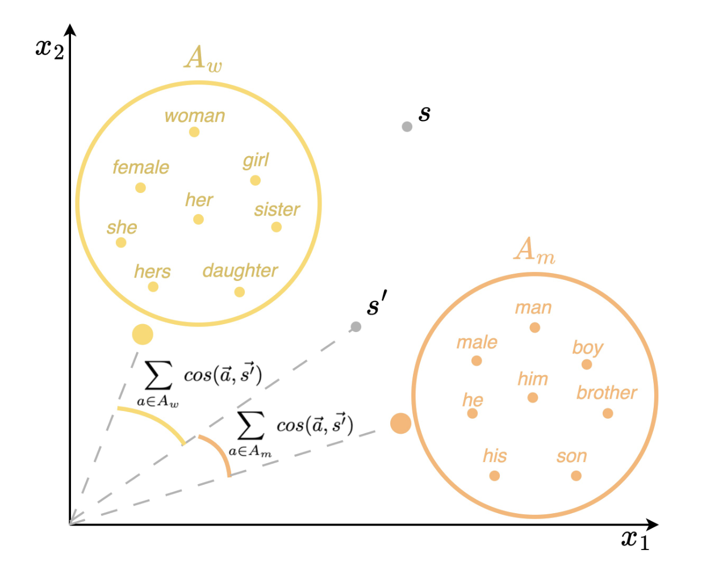 |
Masculine Defaults via Gendered Discourse in Podcasts and Large Language Models Maria Teleki, Xiangjue Dong, Haoran Liu, and James Caverlee ICWSM 2025 Presented at IC2S2, SICon@ACL
Masculine defaults are widely recognized as a significant type of gender bias, but they are often unseen as they are under-researched. Masculine defaults involve three key parts: (i) the cultural context, (ii) the masculine characteristics or behaviors, and (iii) the reward for, or simply acceptance of, those masculine characteristics or behaviors. In this work, we study discourse-based masculine defaults, and propose a twofold framework for (i) the large-scale discovery and analysis of gendered discourse words in spoken content via our Gendered Discourse Correlation Framework (GDCF); and (ii) the measurement of the gender bias associated with these gendered discourse words in LLMs via our Discourse Word-Embedding Association Test (D-WEAT). We focus our study on podcasts, a popular and growing form of social media, analyzing 15,117 podcast episodes. We analyze correlations between gender and discourse words -- discovered via LDA and BERTopic -- to automatically form gendered discourse word lists. We then study the prevalence of these gendered discourse words in domain-specific contexts, and find that gendered discourse-based masculine defaults exist in the domains of business, technology/politics, and video games. Next, we study the representation of these gendered discourse words from a state-of-the-art LLM embedding model from OpenAI, and find that the masculine discourse words have a more stable and robust representation than the feminine discourse words, which may result in better system performance on downstream tasks for men. Hence, men are rewarded for their discourse patterns with better system performance by one of the state-of-the-art language models -- and this embedding disparity is a representational harm and a masculine default.
@inproceedings{teleki25_icwsm,
|
|
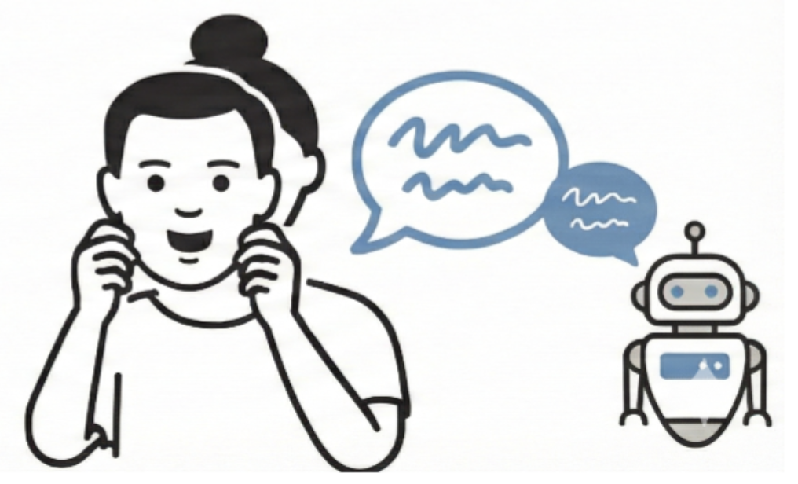 |
POSTER"Walk a Mile in My Voice": Voice Conversion Shapes Trust, Attribution, and Empathy in Human–AI Speech Interactions Shree Harsha Bokkahalli Satish, Maria Teleki, Christoph Minixhofer, Ondrej Klejch, Peter Bell, Éva Székely Collaboration w/ KTH Royal Institute of Technology, University of Edinburgh IUI 2026 Presented at CHI
Speech Large Language Models (SpeechLLMs) represent a new generation of conversational AI that processes spoken language directly from audio. This enables sensitivity to prosodic cues while also inheriting voice-based demographic information that has been shown to lead to biased system behaviour. Studying how people react and reflect on AI responses to different gender and accent presentation can contribute to understanding the potential societal impact. In this study, we examine how vocal identity factors of accent and perceived gender shape user evaluations of AI responses while the underlying linguistic content remains constant. Through two complementary studies (Interactive Study, N=24; Observational Study, N=19), we investigate whether experiencing interactions through voice converted identities versus observing pre-recorded conversations affects perceived harm, acceptability, trust, and responsibility attribution. We find that participants who experienced voice conversion rated benign AI responses as significantly more acceptable and reported significantly higher trust compared to those observing identical interactions, while perceived harm remained low across conditions. Qualitative feedback reveals that participants attributed different AI behaviours to voice characteristics, noting perceived differences in tone, helpfulness, and respect based on accent and gender presentation. Our findings suggest that vocal identity functions as a design variable, with systematic effects on user perception even when lexical content is held constant.
title = {\textbf{Walk a Mile in My Voice: Voice Conversion Shapes Trust, Attribution, and Empathy in Human–AI Speech Interactions}},
|
|
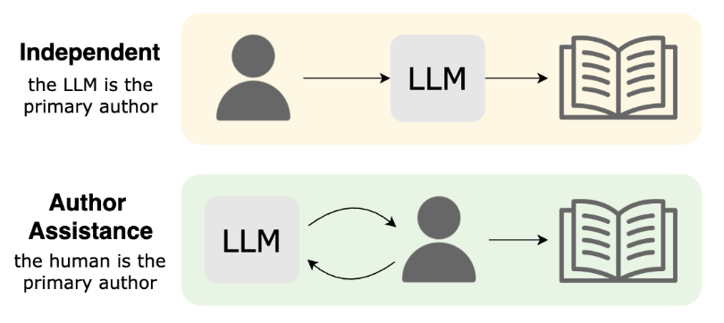 |
A Survey on LLMs for Story Generation Maria Teleki, Vedangi Bengali*, Xiangjue Dong*, Sai Tejas Janjur*, Haoran Liu*, Tian Liu, Cong Wang, Ting Liu, Yin Zhang, Frank Shipman, James Caverlee EMNLP Findings 2025
Methods for story generation with Large Language Models (LLMs) have come into the spotlight recently. We create a novel taxonomy of LLMs for story generation consisting of two major paradigms: (i) independent story generation by an LLM, and (ii) author-assistance for story generation -- a collaborative approach with LLMs supporting human authors. We compare existing works based on their methodology, datasets, generated story types, evaluation methods, and LLM usage. With a comprehensive survey, we identify potential directions for future work.
@inproceedings{teleki25_survey,
|
|
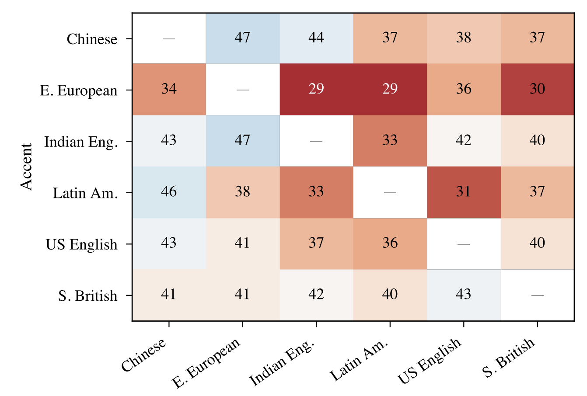 |
The Voice Behind the Words: Quantifying Intersectional Bias in SpeechLLMs Shree Harsha Bokkahalli Satish, Christoph Minixhofer, Maria Teleki, James Caverlee, Ondřej Klejch, Peter Bell, Gustav Eje Henter, Éva Székely Collaboration w/ KTH Royal Institute of Technology, University of Edinburgh Preprint 2026
Speech Large Language Models (SpeechLLMs) process spoken input directly, retaining cues such as accent and perceived gender that were previously removed in cascaded pipelines. This introduces speaker identity dependent variation in responses. We present a large-scale intersectional evaluation of accent and gender bias in three SpeechLLMs using 2,880 controlled interactions across six English accents and two gender presentations, keeping linguistic content constant through voice cloning. Using pointwise LLM-judge ratings, pairwise comparisons, and Best-Worst Scaling with human validation, we detect consistent disparities. Eastern European-accented speech receives lower helpfulness scores, particularly for female-presenting voices. The bias is implicit: responses remain polite but differ in helpfulness. While LLM judges capture the directional trend of these biases, human evaluators exhibit significantly higher sensitivity, uncovering sharper intersectional disparities.
@article{satish26_voicebehind,
|
|
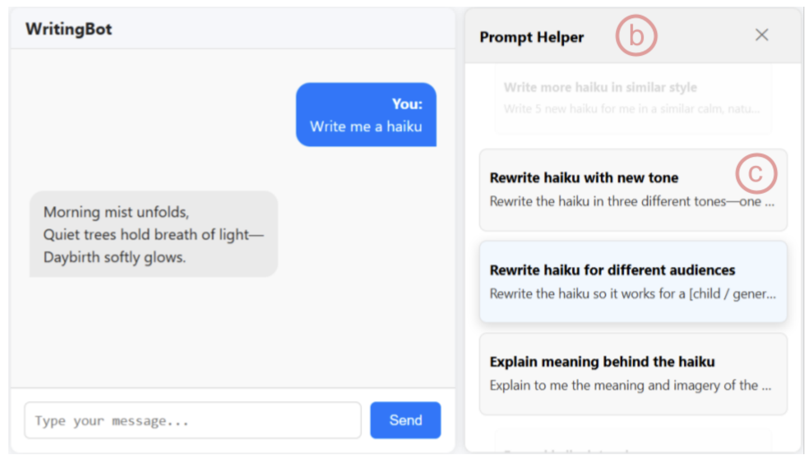 |
POSTERPromptHelper: A Prompt Recommender System for Encouraging Creativity in AI Chatbot Interactions Jason Kim, Maria Teleki, James Caverlee CHI 2026
Prompting is central to interaction with AI systems, yet many users struggle to explore alternative directions, articulate creative intent, or understand how variations in prompts shape model outputs. We introduce prompt recommender systems (PRS) as an interaction approach that supports exploration, suggesting contextually relevant follow-up prompts. We present PromptHelper, a PRS prototype integrated into an AI chatbot that surfaces semantically diverse prompt suggestions while users work on real writing tasks. We evaluate PromptHelper in a 2x2 fully within-subjects study (N=32) across creative and academic writing tasks. Results show that PromptHelper significantly increases users' perceived exploration and expressiveness without increasing cognitive workload. Qualitative findings illustrate how prompt recommendations help users branch into new directions, overcome uncertainty about what to ask next, and better articulate their intent. We discuss implications for designing AI interfaces that scaffold exploratory interaction while preserving user agency, and release open-source resources to support research on prompt recommendation.
@inproceedings{kim26_prompthelper,
|
|
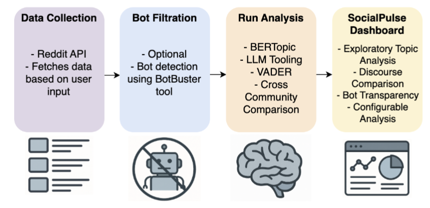 |
DEMOSocialPulse: An Open-Source Subreddit Sensemaking Toolkit Stephanie Birkelbach, Maria Teleki, Peter Carragher, Xiangjue Dong, Nehul Bhatnagar, James Caverlee Collaboration w/ Carnegie Mellon University, Revionics Preprint 2026
Understanding how online communities discuss and make sense of complex social issues is a central challenge in social media research, yet existing tools for large-scale discourse analysis are often closed-source, difficult to adapt, or limited to single analytical views. We present SocialPulse, an open-source subreddit sensemaking toolkit that unifies multiple complementary analyses -- topic modeling, sentiment analysis, user activity characterization, and bot detection -- within a single interactive system. SocialPulse enables users to fluidly move between aggregate trends and fine-grained content, compare highly active and long-tail contributors, and examine temporal shifts in discourse across subreddits. The demo showcases end-to-end exploratory workflows that allow researchers and practitioners to rapidly surface themes, participation patterns, and emerging dynamics in large Reddit datasets. By offering an extensible and openly available platform, SocialPulse provides a practical and reusable foundation for transparent, reproducible sensemaking of online community discourse.
@inproceedings{birkelbach26_socialpulse,
|
|
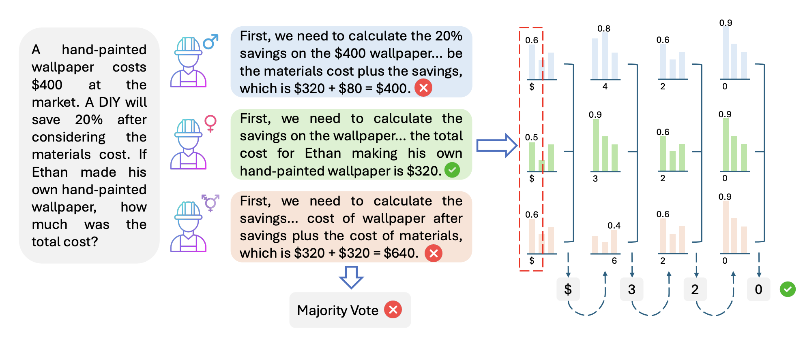 |
CHOIR: Collaborative Harmonization fOr Inference Robustness Xiangjue Dong, Cong Wang, Maria Teleki, Millenium Bismay, and James Caverlee Preprint 2025
Persona-assigned Large Language Models (LLMs) can adopt diverse roles, enabling personalized and context-aware reasoning. However, even minor demographic perturbations in personas, such as simple pronoun changes, can alter reasoning trajectories, leading to divergent sets of correct answers. Instead of treating these variations as biases to be mitigated, we explore their potential as a constructive resource to improve reasoning robustness. We propose CHOIR (Collaborative Harmonization fOr Inference Robustness), a test-time framework that harmonizes multiple persona-conditioned reasoning signals into a unified prediction. CHOIR orchestrates a collaborative decoding process among counterfactual personas, dynamically balancing agreement and divergence in their reasoning paths. Experiments on various reasoning benchmarks demonstrate that CHOIR consistently enhances performance across demographics, model architectures, scales, and tasks - without additional training. Improvements reach up to 26.4% for individual demographic groups and 19.2% on average across five demographics. It remains effective even when base personas are suboptimal. By reframing persona variation as a constructive signal, CHOIR provides a scalable and generalizable approach to more reliable LLM reasoning.
@inproceedings{dong25_choir,
|
|
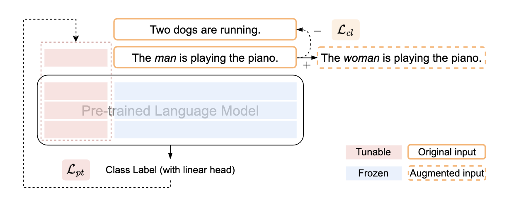 |
Co2PT: Mitigating Bias in Pre-trained Language Models through Counterfactual Contrastive Prompt Tuning Xiangjue Dong, Ziwei Zhu, Zhuoer Wang, Maria Teleki, and James Caverlee Collaboration w/ George Mason University EMNLP Findings 2023
Pre-trained Language Models are widely used in many important real-world applications. However, recent studies show that these models can encode social biases from large pre-training corpora and even amplify biases in downstream applications. To address this challenge, we propose Co2PT, an efficient and effective debias-while-prompt tuning method for mitigating biases via counterfactual contrastive prompt tuning on downstream tasks. Our experiments conducted on three extrinsic bias benchmarks demonstrate the effectiveness of Co2PT on bias mitigation during the prompt tuning process and its adaptability to existing upstream debiased language models. These findings indicate the strength of Co2PT and provide promising avenues for further enhancement in bias mitigation on downstream tasks.
@inproceedings{dong-etal-2023-co2pt,
|
Governance of AI Systems
I study the infrastructures of power — governments, universities, and tech companies — that determine how AI systems are authorized, deployed, and contested. I develop audits and analytical frameworks that reveal where accountability breaks down.|
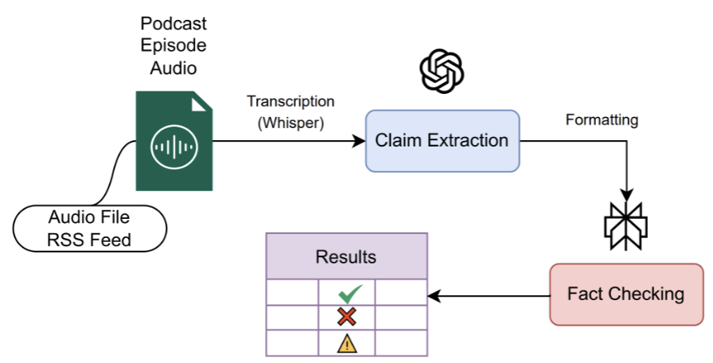 |
DEMOPodChecker: An Interpretable Fact-Checking Companion for Podcasts Anna Irmetova, Haoran Liu, Maria Teleki, Peter Carragher, Julie Zhang, James Caverlee Collaboration w/ Carnegie Mellon University Preprint 2026
We present PodChecker, a user-facing system for automated, claim-level fact-checking of podcast content. PodChecker processes podcast audio or RSS feeds by transcribing episodes, extracting atomic factual claims, and assigning each claim one of four fine-grained labels -- \textit{true, false, misleading/partially true, or unverifiable} -- using retrieval-augmented verification. The system presents fact-checking results at the level of individual claims, accompanied by simple visual indicators and links to supporting/conflicting sources. This design, implemented via an interactive web-based interface, enables users to inspect fact-checking outputs and underlying evidence directly, supporting interpretable and critical engagement with long-form audio content. By presenting claim-level evidence and labels, PodChecker assists both general listeners and professional fact-checkers in assessing podcast factuality.
@inproceedings{irmetova26_podchecker,
|
|
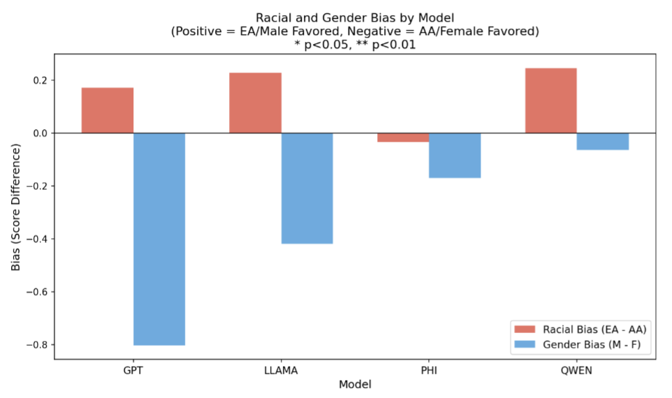 |
SHORTDetecting and Mitigating Demographic Bias in LLM-Based Resume Evaluation Oluwadayo Bamgbelu, Maria Teleki*, Xiangjue Dong*, James Caverlee Preprint 2026
@misc{bamgbelu_resume_bias_llm,
|
Education
Service
|
Workshop Organizer for Speech AI for All: The What, How, and Who of Measurement Kimi V. Wenzel, Alisha Pradhan, Maria Teleki, Tobias Weinberg, Robin Netzorg, Alyssa Hillary Zisk, Anna Seo Gyeong Choi, Jingjin Li, Raja Kushalnagar, Colin Lea, Abraham Glasser, Christian Vogler, Nan Bernstein Ratner, Ly Xīnzhèn M. Zhǎngsūn Brown, Allison Koenecke, Karen Nakamura, Shaomei Wu CHI 2026
Optimized for ``typical'' and fluent speech, today's speech AI systems perform poorly for people with speech diversities, sometimes to an unusable or even harmful degree. These harms play out in daily life through household voice assistants and workplace meeting services, in higher stakes scenarios like medical transcription, and in emerging applications of AI in augmentative and alternative communication. Standard metrics aiming to quantify these inequities, however, fail to comprehensively understand the impact of speech AI on diverse user groups, and furthermore do not easily generalize to newer speech language and speech generation models. To address these social inequities and measurement limitations, this workshop brings academics, practitioners, and non-profit workers together in proactive dialogue to improve measurement of speech AI performance and user impact. Through a poster session and breakout group discussions, our workshop will extend current understanding on how to best leverage existing metrics, like Word Error Rate, within the HCI design ecosystem, and also explore new innovations in speech AI measurement. Key outcomes of this workshop include: a research agenda for CHI community to guide and contribute to speech AI development, groundwork for new papers on speech AI measurement, and a diversity-centered benchmark suite for external evaluators.
@inproceedings{wenzel26_speech,
|
Media
Teaching
Mentoring
If you're a TAMU student looking to get involved in research, send me an email atmariateleki@tamu.edu! Whether you have prior research experience
or are just starting out, I have a few spots each semester to mentor and collaborate
with students who have a passion for learning, a growth mindset, and who want
to contribute to impactful projects.
★ student was an author on a published paper;
♠ student was an author on a Preprint paper;
▲ student completed their thesis;
◆ student received course credit (i.e. CSCE 485, CSCE 691);
♣ student had no publications prior to mentorship.
![[Smiling]](img/apollo-smile.png){kind=link}
![[Sunflowers]](img/apollo-david-sunflower.jpeg){kind=link}
![[Turkey Trot]](img/apollo-turkey-trot.jpg){kind=link}
![[Fun]](img/apollo-rope.jpeg){kind=link}
![[Generated-1]](img/apollo-generated1.png){kind=link}
![[Generated-2]](img/apollo-generated2.png){kind=link}
![[Kos, Greece]](img/kos-sunset.JPG){kind=link}
![[Italian Alps]](img/italy-alps.png){kind=link}
![[Casper, Wyoming]](img/wyoming.jpeg){kind=link}
![[On top of volcano in Hawaii]](img/hawaii-volcano.jpeg){kind=link}
![[Bastrop, Texas]](img/apollo-pinetrees.png){kind=link}